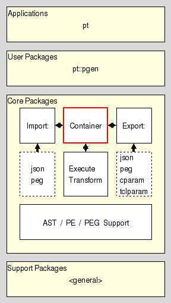

pt::peg::container - PEG Storage
Are you lost ? Do you have trouble understanding this document ? In that case please read the overview provided by the Introduction to Parser Tools. This document is the entrypoint to the whole system the current package is a part of.
This package provides a container class for parsing expression grammars, with each instance storing a single grammar and allowing the user to manipulate and query its definition.
It resides in the Storage section of the Core Layer of Parser Tools, and is one of the three pillars the management of parsing expression grammars resides on.

The other two pillars are, as shown above
PEG Import, and
Packages related to this are:
This package provides an implementation of PARAM, a virtual machine for the parsing of a channel, geared towards the needs of handling PEGs.
This package implements an interpreter for PEGs on top of the virtual machine provided by pt::peg::rde
The package exports the API described here.
The command creates a new container object for a parsing expression grammar and returns the fully qualified name of the object command as its result. The API of this object command is described in the section Object API. It may be used to invoke various operations on the object.
The new container will be empty if no src is specified. Otherwise it will contain a copy of the grammar contained in the src. All operators except deserialize interpret src as a container object command. The deserialize operator interprets src as the serialization of a parsing expression grammar instead, as specified in section PEG serialization format.
An empty grammar has no nonterminal symbols, and the start expression is the empty expression, i.e. epsilon. It is valid, but not useful.
All objects created by this package provide the following methods for the manipulation and querying of their contents:
This method destroys the object, releasing all claimed memory, and deleting the associated object command.
This method resets the object to contain the empty grammar. It does not destroy the object itself.
This method returns the import manager object currently attached to the container, if any.
This method attaches the object as import manager to the container, and returns it as the result of the command. Note that the object is not put into ownership of the container. I.e., destruction of the container will not destroy the object.
It is expected that object provides a method named import text which takes a text and a format name, and returns the canonical serialization of the table of contents contained in the text, assuming the given format.
This method returns the export manager object currently attached to the container, if any.
This method attaches the object as export manager to the container, and returns it as the result of the command. Note that the object is not put into ownership of the container. I.e., destruction of the container will not destroy the object.
It is expected that object provides a method named export object which takes the container and a format name, and returns a text encoding table of contents stored in the container, in the given format. It is further expected that the object will use the container's method serialize to obtain the serialization of the table of contents from which to generate the text.
This method assigns the contents of the PEG object source to ourselves, overwriting the existing definition. This is the assignment operator for grammars.
This operation is in effect equivalent to
objectName deserialize = [source serialize]
This method assigns our contents to the PEG object destination, overwriting the existing definition. This is the reverse assignment operator for grammars.
This operation is in effect equivalent to
destination deserialize = [objectName serialize]
This method returns our grammar in some textual form usable for transfer, persistent storage, etc. If no format is not specified the returned result is the canonical serialization of the grammar, as specified in the section PEG serialization format.
Otherwise the object will use the attached export manager to convert the data to the specified format. In that case the method will fail with an error if the container has no export manager attached to it.
This is the complementary method to serialize. It replaces the current definition with the grammar contained in the data. If no format was specified it is assumed to be the regular serialization of a grammar, as specified in the section PEG serialization format
Otherwise the object will use the attached import manager to convert the data from the specified format to a serialization it can handle. In that case the method will fail with an error if the container has no import manager attached to it.
The result of the method is the empty string.
This method behaves like deserialize = in its essentials, except that it merges the grammar in the data to its contents instead of replacing it. The method will fail with an error and leave the grammar unchanged if merging is not possible, i.e. would produce an invalid grammar.
The result of the method is the empty string.
This method returns the current start expression of the grammar.
This method defines the start expression of the grammar. It replaces the current start expression with the parsing expression pe, and returns the new start expression.
The method will fail with an error and leave the grammar unchanged if pe does not contain a valid parsing expression as specified in the section PE serialization format.
This method returns the set of all nonterminal symbols known to the grammar.
This method returns a dictionary mapping the set of all nonterminal symbols known to the grammar to their semantic modes.
This method takes a dictionary mapping a set of nonterminal symbols known to the grammar to their semantic modes, and returns the new full mapping of nonterminal symbols to semantic modes.
The method will fail with an error if any of the nonterminal symbols in the dictionary is not known to the grammar, or the empty string, i.e. an invalid nonterminal symbol, or if any the chosen modes is not one of the legal values.
This method returns a dictionary mapping the set of all nonterminal symbols known to the grammar to their parsing expressions (right-hand sides).
This method takes a dictionary mapping a set of nonterminal symbols known to the grammar to their parsing expressions (right-hand sides), and returns the new full mapping of nonterminal symbols to parsing expressions.
The method will fail with an error any of the nonterminal symbols in the dictionary is not known to the grammar, or the empty string, i.e. an invalid nonterminal symbol, or any of the chosen parsing expressions is not a valid parsing expression as specified in the section PE serialization format.
This method adds the nonterminal symbols nt, etc. to the grammar, and defines default semantic mode and expression for it (value and epsilon respectively). The method returns the empty string as its result.
The method will fail with an error and leaves the grammar unchanged if any of the nonterminal symbols are either already defined in our grammar, or are the empty string (an invalid nonterminal symbol).
The method does nothing if no symbol was specified as argument.
This method removes the named nonterminal symbols nt, etc. from the set of nonterminal symbols known to our grammar. The method returns the empty string as its result.
The method will fail with an error and leave the grammar unchanged if any of the nonterminal symbols is not known to the grammar, or is the empty string, i.e. an invalid nonterminal symbol.
This method tests whether the nonterminal symbol nt is known to our grammar or not. The result is a boolean value. It will be set to true if nt is known, and false otherwise.
The method will fail with an error if nt is the empty string, i.e. an invalid nonterminal symbol.
This method renames the nonterminal symbol ntold to ntnew. The method returns the empty string as its result.
The method will fail with an error and leave the grammar unchanged if either ntold is not known to the grammar, or ntnew is already known, or any of them is the empty string, i.e. an invalid nonterminal symbol.
This method returns the current semantic mode for the nonterminal symbol nt.
The method will fail with an error if nt is not known to the grammar, or the empty string, i.e. an invalid nonterminal symbol.
This mode sets the semantic mode for the nonterminal symbol nt, and returns the new mode. The method will fail with an error if nt is not known to the grammar, or the empty string, i.e. an invalid nonterminal symbol, or the chosen mode is not one of the legal values.
The following modes are legal:
The semantic value of the nonterminal symbol is an abstract syntax tree consisting of a single node node for the nonterminal itself, which has the ASTs of the symbol's right hand side as its children.
The semantic value of the nonterminal symbol is an abstract syntax tree consisting of a single node node for the nonterminal, without any children. Any ASTs generated by the symbol's right hand side are discarded.
The nonterminal has no semantic value. Any ASTs generated by the symbol's right hand side are discarded (as well).
This method returns the current parsing expression (right-hand side) for the nonterminal symbol nt.
The method will fail with an error if nt is not known to the grammar, or the empty string, i.e. an invalid nonterminal symbol.
This method set the parsing expression (right-hand side) of the nonterminal nt to pe, and returns the new parsing expression.
The method will fail with an error if nt is not known to the grammar, or the empty string, i.e. an invalid nonterminal symbol, or pe does not contain a valid parsing expression as specified in the section PE serialization format.
Here we specify the format used by the Parser Tools to serialize Parsing Expression Grammars as immutable values for transport, comparison, etc.
We distinguish between regular and canonical serializations. While a PEG may have more than one regular serialization only exactly one of them will be canonical.
The serialization of any PEG is a nested Tcl dictionary.
This dictionary holds a single key, pt::grammar::peg, and its value. This value holds the contents of the grammar.
The contents of the grammar are a Tcl dictionary holding the set of nonterminal symbols and the starting expression. The relevant keys and their values are
The value is a Tcl dictionary whose keys are the names of the nonterminal symbols known to the grammar.
Each nonterminal symbol may occur only once.
The empty string is not a legal nonterminal symbol.
The value for each symbol is a Tcl dictionary itself. The relevant keys and their values in this dictionary are
The value is the serialization of the parsing expression describing the symbols sentennial structure, as specified in the section PE serialization format.
The value can be one of three values specifying how a parser should handle the semantic value produced by the symbol.
The semantic value of the nonterminal symbol is an abstract syntax tree consisting of a single node node for the nonterminal itself, which has the ASTs of the symbol's right hand side as its children.
The semantic value of the nonterminal symbol is an abstract syntax tree consisting of a single node node for the nonterminal, without any children. Any ASTs generated by the symbol's right hand side are discarded.
The nonterminal has no semantic value. Any ASTs generated by the symbol's right hand side are discarded (as well).
The value is the serialization of the start parsing expression of the grammar, as specified in the section PE serialization format.
The terminal symbols of the grammar are specified implicitly as the set of all terminal symbols used in the start expression and on the RHS of the grammar rules.
The canonical serialization of a grammar has the format as specified in the previous item, and then additionally satisfies the constraints below, which make it unique among all the possible serializations of this grammar.
The keys found in all the nested Tcl dictionaries are sorted in ascending dictionary order, as generated by Tcl's builtin command lsort -increasing -dict.
The string representation of the value is the canonical representation of a Tcl dictionary. I.e. it does not contain superfluous whitespace.
Assuming the following PEG for simple mathematical expressions
PEG calculator (Expression)
Digit <- '0'/'1'/'2'/'3'/'4'/'5'/'6'/'7'/'8'/'9' ;
Sign <- '-' / '+' ;
Number <- Sign? Digit+ ;
Expression <- Term (AddOp Term)* ;
MulOp <- '*' / '/' ;
Term <- Factor (MulOp Factor)* ;
AddOp <- '+'/'-' ;
Factor <- '(' Expression ')' / Number ;
END;
then its canonical serialization (except for whitespace) is
pt::grammar::peg {
rules {
AddOp {is {/ {t -} {t +}} mode value}
Digit {is {/ {t 0} {t 1} {t 2} {t 3} {t 4} {t 5} {t 6} {t 7} {t 8} {t 9}} mode value}
Expression {is {x {n Term} {* {x {n AddOp} {n Term}}}} mode value}
Factor {is {/ {x {t (} {n Expression} {t )}} {n Number}} mode value}
MulOp {is {/ {t *} {t /}} mode value}
Number {is {x {? {n Sign}} {+ {n Digit}}} mode value}
Sign {is {/ {t -} {t +}} mode value}
Term {is {x {n Factor} {* {x {n MulOp} {n Factor}}}} mode value}
}
start {n Expression}
}
Here we specify the format used by the Parser Tools to serialize Parsing Expressions as immutable values for transport, comparison, etc.
We distinguish between regular and canonical serializations. While a parsing expression may have more than one regular serialization only exactly one of them will be canonical.
The string epsilon is an atomic parsing expression. It matches the empty string.
The string dot is an atomic parsing expression. It matches any character.
The string alnum is an atomic parsing expression. It matches any Unicode alphabet or digit character. This is a custom extension of PEs based on Tcl's builtin command string is.
The string alpha is an atomic parsing expression. It matches any Unicode alphabet character. This is a custom extension of PEs based on Tcl's builtin command string is.
The string ascii is an atomic parsing expression. It matches any Unicode character below U0080. This is a custom extension of PEs based on Tcl's builtin command string is.
The string control is an atomic parsing expression. It matches any Unicode control character. This is a custom extension of PEs based on Tcl's builtin command string is.
The string digit is an atomic parsing expression. It matches any Unicode digit character. Note that this includes characters outside of the [0..9] range. This is a custom extension of PEs based on Tcl's builtin command string is.
The string graph is an atomic parsing expression. It matches any Unicode printing character, except for space. This is a custom extension of PEs based on Tcl's builtin command string is.
The string lower is an atomic parsing expression. It matches any Unicode lower-case alphabet character. This is a custom extension of PEs based on Tcl's builtin command string is.
The string print is an atomic parsing expression. It matches any Unicode printing character, including space. This is a custom extension of PEs based on Tcl's builtin command string is.
The string punct is an atomic parsing expression. It matches any Unicode punctuation character. This is a custom extension of PEs based on Tcl's builtin command string is.
The string space is an atomic parsing expression. It matches any Unicode space character. This is a custom extension of PEs based on Tcl's builtin command string is.
The string upper is an atomic parsing expression. It matches any Unicode upper-case alphabet character. This is a custom extension of PEs based on Tcl's builtin command string is.
The string wordchar is an atomic parsing expression. It matches any Unicode word character. This is any alphanumeric character (see alnum), and any connector punctuation characters (e.g. underscore). This is a custom extension of PEs based on Tcl's builtin command string is.
The string xdigit is an atomic parsing expression. It matches any hexadecimal digit character. This is a custom extension of PEs based on Tcl's builtin command string is.
The string ddigit is an atomic parsing expression. It matches any decimal digit character. This is a custom extension of PEs based on Tcl's builtin command regexp.
The expression [list t x] is an atomic parsing expression. It matches the terminal string x.
The expression [list n A] is an atomic parsing expression. It matches the nonterminal A.
For parsing expressions e1, e2, ... the result of [list / e1 e2 ... ] is a parsing expression as well. This is the ordered choice, aka prioritized choice.
For parsing expressions e1, e2, ... the result of [list x e1 e2 ... ] is a parsing expression as well. This is the sequence.
For a parsing expression e the result of [list * e] is a parsing expression as well. This is the kleene closure, describing zero or more repetitions.
For a parsing expression e the result of [list + e] is a parsing expression as well. This is the positive kleene closure, describing one or more repetitions.
For a parsing expression e the result of [list & e] is a parsing expression as well. This is the and lookahead predicate.
For a parsing expression e the result of [list ! e] is a parsing expression as well. This is the not lookahead predicate.
For a parsing expression e the result of [list ? e] is a parsing expression as well. This is the optional input.
The canonical serialization of a parsing expression has the format as specified in the previous item, and then additionally satisfies the constraints below, which make it unique among all the possible serializations of this parsing expression.
The string representation of the value is the canonical representation of a pure Tcl list. I.e. it does not contain superfluous whitespace.
Terminals are not encoded as ranges (where start and end of the range are identical).
Assuming the parsing expression shown on the right-hand side of the rule
Expression <- Term (AddOp Term)*
then its canonical serialization (except for whitespace) is
{x {n Term} {* {x {n AddOp} {n Term}}}}
This document, and the package it describes, will undoubtedly contain bugs and other problems. Please report such in the category pt of the Tcllib Trackers. Please also report any ideas for enhancements you may have for either package and/or documentation.
EBNF, LL(k), PEG, TDPL, context-free languages, expression, grammar, matching, parser, parsing expression, parsing expression grammar, push down automaton, recursive descent, state, top-down parsing languages, transducer
Parsing and Grammars
Copyright © 2009 Andreas Kupries <andreas_kupries@users.sourceforge.net>